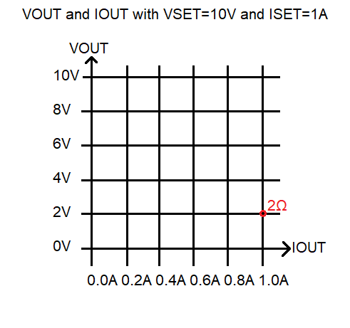

EENG 393
In Lab 3 - CV regulatorRequirements
When you have worked through all the material in this lab writeup, please take the inLab 03 Quiz. You may find quiz questions to be similar to, but not identical to the numbered questions in this inLab write up. Note, you wil have 60 minutes to complete the ten questions in the Canvas quiz so it would be a good idea to complete all the inLab activities before taking the Canvas quiz. Do not turn in the answers to the numbered questions in this inLab writeup.LED
Light emitting diodes (LEDs) are polarized devices meaning that they have positive and negative leads. Current flowing from the positive to the negative lead causes the PN junction inside the LED to emit photons. The current flowing through the PN junction produces a voltage that follows the current vs. voltage graph shown in the image below.
The LED is supposed to be operated around the forward voltage Vf level. Notice that at this point the slope of the I vs. V graph is large. This means that small changes in the voltage will produce large changes in the current. This means that adjusting the brightness of an LED using the voltage knob of a power supply is difficult - either the LED is to dim or you over-voltage the LED and destroy it. The high slope of the I vs. V graph also means that changes in the current through the LED produce small changes in the voltage. Thus, it makes much more sense to try to adjust the brightness of an LED using current.
The notion that the forward voltage of an LED as the voltage that illuminates the LED is a bit misleading. Vf is a representative value that produces a "normal" amount of illumination. You can measure Vf using the bench digital multimeters (DMMs) as follows.
- Power on the DMM using the white button on the lower left corner,
- Connect banana plug cables into the DMM. Black into the COM and red into the jack labeled with a diode picture,
- Set the DMM into diode mode by pressing the button with a black diode symbol on it,
- Attach the red cable to the anode of the LED (longer lead) and the black cable to the cathode of the LED (shorter lead),
- The LED should dimly illuminate,
- The DMM display will indicate the forward voltage, Vf with way more precision than needed.

On almost every circuit that I build, I include a power-on LED. This LED provides me with a positive indication that the power input is satisfactory. It also serves as a useful debugging tool, turning off if I somehow short-out the power in the circuit, or dimly illuminating if I am over stressing the circuit. An LED with a series resistor placed across the power rail is an easy way to provide this function.

The value of the resistor is pretty easy to figure out if you know Vf and the amount of current that you want to flow through the LED, If. The datasheet for the LED should have these values. As a general rule I limit the current through power-on LEDs to no more than 5mA as I find their glare distracting. The calculation to determine the value of the resistor is as follows.
Voltage across resistor Vcc - Vf Ohm's law for resistor Vcc - Vf = If*R Solve for R R = (Vcc - Vf)/IfWhen selecting an LED for an application you should take the following characteristics into consideration.
- Color
- It's pretty obvious that the color is an item that you can select. However, there are trade-off's involved. For example, the color in large part determines Vf with longer wavelengths having lower Vf.
- Forward voltage
- As state before, Vf is not an absolute value, but a representative value that will cause the LED to produce near maximal illumination.
- Continuous forward current
- Since the LED has a voltage drop while current is running through it, the LED necessarily dissipates power. The LED gets hot while doing this and can handle only so much power before the PN junction fails. It is wise to operate LEDs well below their peak current to prolong their lifetime operation.
- Pulsed forward current
- In some applications, like IR communications, it is better to pulse the LED with very high currents for brief periods of time. In IR communication, this has the potential to greatly increase communication range. Some data sheets will provide the duration of the pulse, frequency of pulses, and the current for the pulses. Pulse currents of 1A are not uncommon for small 5mm LEDs.
- Size
- The most common through hole LEDs are in a T-1 3/4 case, sometimes called a 5mm case because the LED is 5mm in diameter. I typically use 1206 surface mount LEDs as they are easy to handle and as small as the other SMT discretes that I use.
- Brightness
- The brightness of an LED should be measure in millicandela (mcd), where one candela is the luminous intensity projected over a 1 sterdian solid cone. Anything over about 50mcd is annoying to look at.
- Angle
- The rear of the LED housing is formed into parabolic cone in order to increase the number of photons leaving the LED. The shape of the cone determine the range of the light ray angles emitted. All things being equal, narrow beams have a longer range, while wide beams are seen at a wider range of angles.
There is a relationship between the wavelength and forward voltage explained in this thread.
The fact that a DMM will dimly illuminate an LED can be a very useful tool. Let's say that you have a 7-segment display with no technical documentation. In order to use it, you need to know what the pins are connected to. To accomplish this first configure the DMM as shown in the image above. Then, connect the common (ground) lead to one of the 7-segment leads and swipe the red lead across the pins of the 7-segment display while keeping an eye on the individual segments of the display. If no segments light up, try a different common pin on the 7-segment display. Continue and you will eventually get a segment to light up. Then this is the time to start building your own pin-out with pencil and paper.
LED flower schematic
The LED flower contains a single 10mm common anode RGB LED powered through a 9V battery. Three potentiometers, wired in rheostat mode, provide a current limiting for the LEDs. This allows a user to adjust the amount of light coming from the red, green, and blue LEDs creating a rich pallet of colors.
- Complete the following table using information found on the last
page of the
RGB LED technical documents.
Parameters GaP Red Green Blue VF (Volts) Avg Forward Curr (mA) - From this information, use the equation for the current limiting
resistor from the previous section to determine the smallest current limiting
resistor that should be used in the circuit. Put this resistor value in
the "Smallest Resistor" column.
Color Smallest Resistor GaP Red Green Blue
Power Supplies
The goal of this course is to build a power supply unit (PSU) that can regulate voltage and current. The ability to regulate voltage is something that I think should come naturally to most EE student because we often are often asked to power a circuit with some specific voltage. When you set a voltage limit on the power supply you are telling the PSU to deliver no more than this amount of voltage to the load. My guess is that in most labs you have seen the PSU deliver that set voltage to any load you have connected. However, the supply will only deliver the full voltage so long as the current consumed by the load does not exceed the current limit set on the power supply. When you set a current limit on the power supply you are telling the PSU to deliver no more than this amount of current to the load.The combination of voltage and current limit means that the PSU is always limited by either the set voltage limit or set current limit. A power supply will always give you some means of setting the voltage limit (VSET knob in the image below) and of the setting the current limit (ISET knob in the image below). We will call the voltage delivered to the load VOUT and the current delivered to the load IOUT.

Let's take an example where a power supply is configured with VSET=10V, ISET=1A and a 2Ω load attached across the output terminals (VOUT and GND in the image above). How much voltage and current will the power supply deliver to this load? As mentioned above, the power supply will deliver the set voltage or current to the load, determining which is a matter of correctly applying Ohm's law.
If VOUT = VSET = 10V then IOUT = 10V/2Ω = 5A If IOUT = ISET = 1A then VOUT = 1A*2Ω = 2VFrom this you should be able to deduce that the power supply will have VOUT=2V and IOUT = 1A. Because if the power supply had VOUT=10V, then the output current would have to be greater than the maximum allowable current limit set by the user (which was 1A). This combination of VOUT=2V and IOUT=1A is marked on the graph below with a red circle labeled 2Ω.
-
Determine the value of VOUT and IOUT for loads of
6Ω,
10Ω,
40Ω,
80Ω,
100Ω,
1kΩ,
1MΩ on a power supply configured with VSET=10V and ISET=1A.
Mark them on the graph below and annotate each point with its
resistance.
 - You should remember that the power delivered to the load is VOUT*IOUT. In the graph above, this is just the product of the x,y coordinates of each resistance point. What is the trend in the power delivered to the load as you move from low to high resistances?
- You have configured a power supply with set values of VSET and ISET. What load resistance will result in maximum power transfered to the load? State your answer in terms of ISET and VSET.
- Complete the following graph of the expected power supply behavior
with ISET=1A and a load of 10Ω. The user will be increasing VSET
from 0V to 20V. Draw a graph of the values of VOUT.

- Complete the following graph of the expected power supply behavior
with VSET=10V and a load of 10Ω. The user will be increasing ISET
from 0V to 2A. Draw a graph of the values of IOUT.

Adjusting voltage and current limit
The following instructions will require you to change VSET and ISET, hold the load resistance constant and measure VOUT and IOUT. You will be using the bench PSUs, banana/banana cables and a a 10Ω, 5 Watt power resistor from the "Power Resistors" drawer.
|
|
To adjust voltage
|
- Complete the following table using the instructions above.
Voltage 1.0A
Current0.5A
Current0.2A
Current0V 0/0 0/0 0/0 2V 4V 6V 5V/0.5A 8V 10V 12V